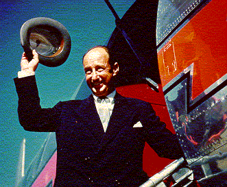
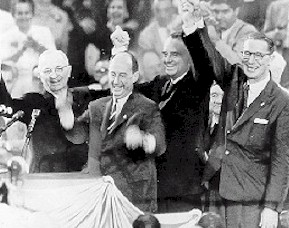
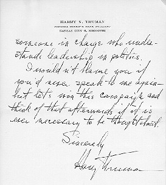
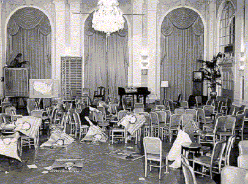

| Stevenson announced his candidacy for the 1956 Democratic presidential nomination in November 1955. This time, competition from Tennessee Senator Estes Kefauver and New York Governor W. Averell Harriman forced Stevenson to campaign more aggressively for the nomination. After winning the nomination, Stevenson waged a vigorous presidential campaign, delivering 300 speeches and traveling 55,000 miles. He called on the electorate to join him on a march to a "new America," based on a liberal agenda that anticipated the programs of the Kennedy and Johnson administrations. |  |
|  | Upon securing the nomination, Stevenson deferred to convention delegates to select his running mate. Stevenson favored Massachusetts Senator John F. Kennedy, but the delegates chose Estes Kefauver by a narrow margin. Here, Truman, Stevenson, Harriman, and Kefauver celebrate Stevenson's nomination at the 1956 Democratic National Convention. |
| Much to Stevenson's dismay, at the convention Truman
supported Averell
Harriman for the 1956 Democratic ticket. This final page of a letter
Truman sent
Stevenson acknowledges the acrimony Truman's support for Harriman
might have caused, while
putting in perspective the need to win the election above all else. |
 |
|  | While President Eisenhower suffered heart problems, the economy enjoyed
robust health. Stevenson's hopes for victory were dashed when, in October, President
Eisenhower's doctors gave him a clean bill of health and the Suez crisis erupted. The
public was not convinced that a change in leadership was needed, and Stevenson lost his
second bid for the presidency, though not the respect of his fellow citizens. |
Go to the next section of photographs.
Return to the Mudd Library home page.
© 2000 Princeton University Library